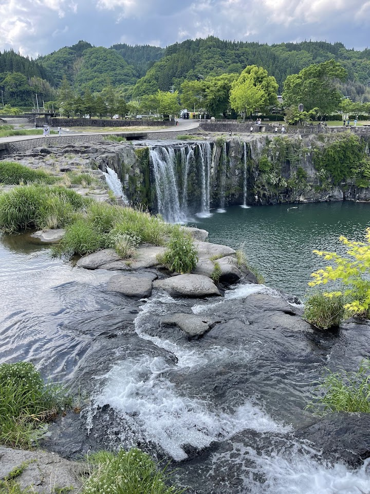
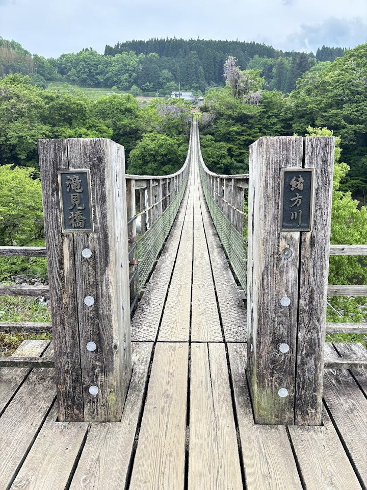
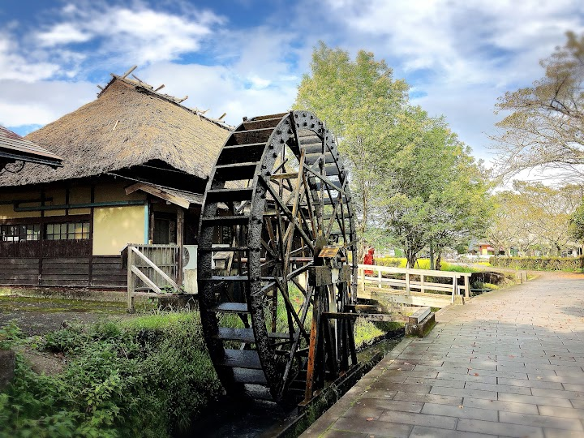
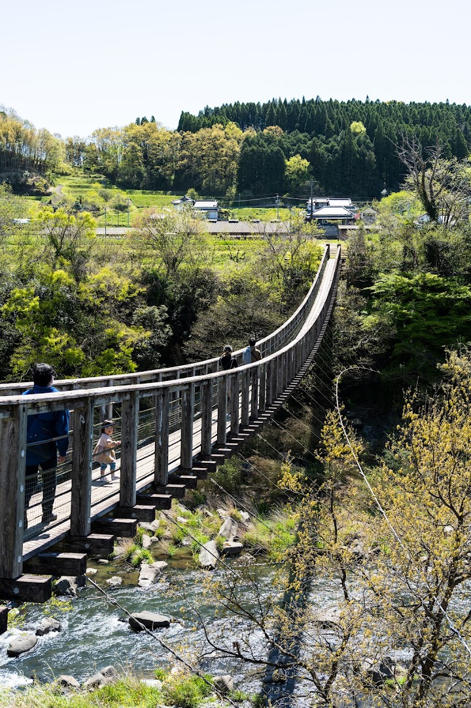
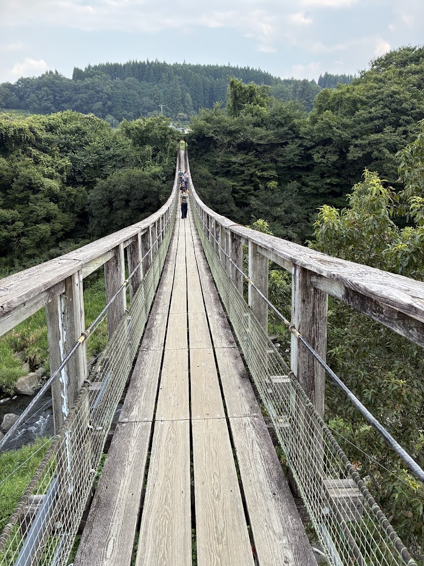

Harajiri Falls
Harajiri Falls is a large semicircular waterfall that you can view from a wooden suspension bridge, nicknamed the Niagara of the East. It is one of the best-known waterfalls in Oita.
Open in Google Maps (street view, more photos and reviews there)






Visitor tips on finding it and getting there
The "Niagara of the East" in Oita I visited Harajiri Falls on a hot summer weekend, July 18, 2026, and it was an unforgettable stop during my Kyushu road trip. Harajiri Falls is one of Kyushu's most spectacular natural attractions and is often called the "Niagara of the East." Located in the peaceful countryside of Bungo-Ono, Oita Prefecture, this impressive waterfall stretches about 120 meters wide with a 20-meter drop, creating a breathtaking panoramic view. It has also been selected as one of Japan's Top 100 Waterfalls. One of the best parts of visiting is walking across the suspension b
Cool waterfall, you can go down to the bottom and skip rocks. There also seem to be small sightseeing boat tours too. If you walk along the top of the waterfall towards the stairs on the otherside, you can get a really good view of the falls too. There's also a cool bridge that goes across it where you can get a good view. Interesting things at the michinoeki (road side station) too!